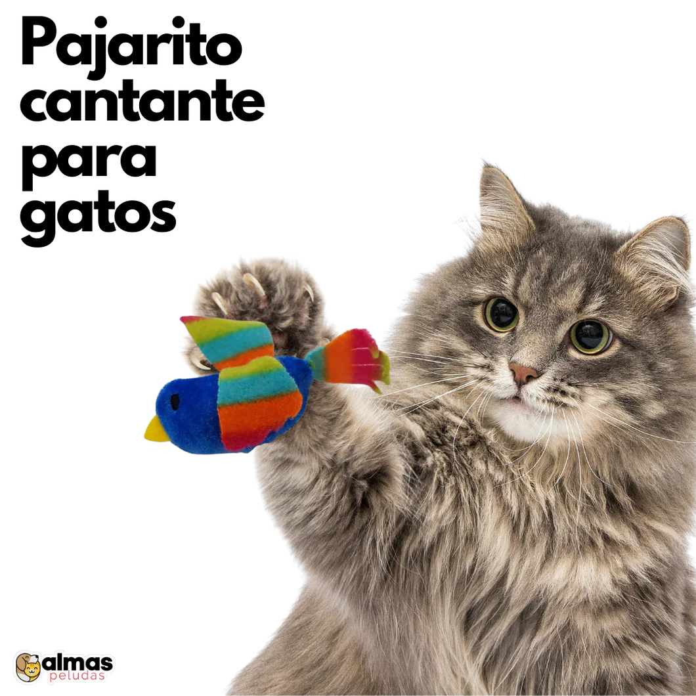

¿Por qué los gatos amasan?
Los peludos gatunos son un mundo lleno de misterio, tienen hábitos y comportamientos que dejan mil cosas a la imaginación, en este blog hablaremos del comportamiento de los gatos de amasar superficies, que aunque no es la verdad absoluta te dará varias ideas interesantes sobre porque tu gato lo hace. Se conoce como amasar a la acción que el gato realiza cuando mueve sus patas de manera rítmica en un objeto suave, comúnmente cobijas, camas o cojines, haciendo presión de adentro hacia afuera.